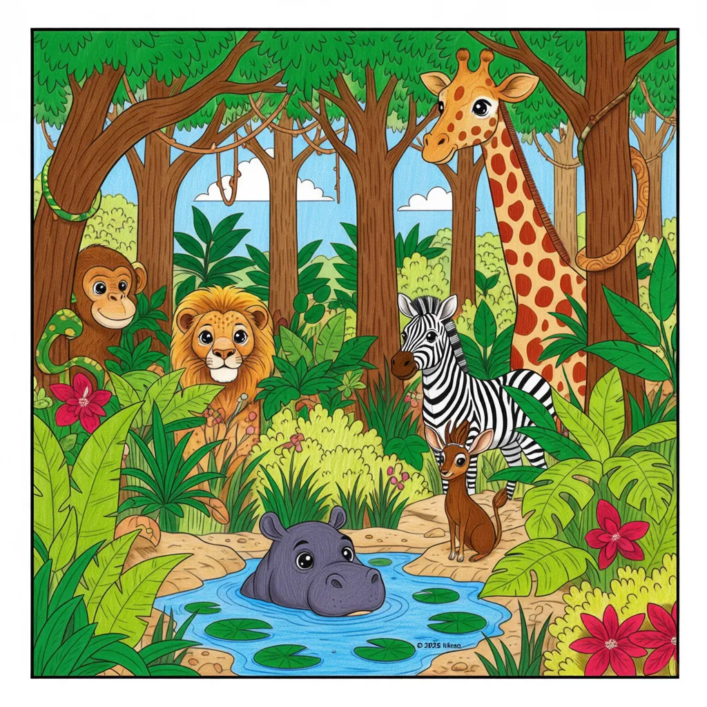

Hidden Jungle Challenge
Find the next coloring adventure!

Did you know?
- Every great explorer knows that a journey ends only when a new one begins.
- The amazing work you've done on the 'Safari Sparks' collection shows your dedication and talent.
- Your curiosity and creativity are your greatest tools for discovery!
- Never stop looking for new things to learn, color, and imagine.
- Can you find the hidden link that takes you to your next collection?
- A true artist always seeks the next masterpiece! Go shine!